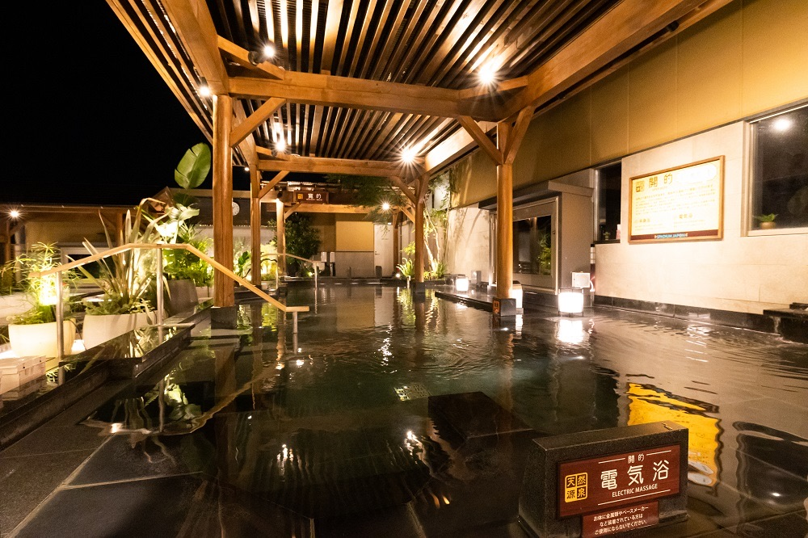
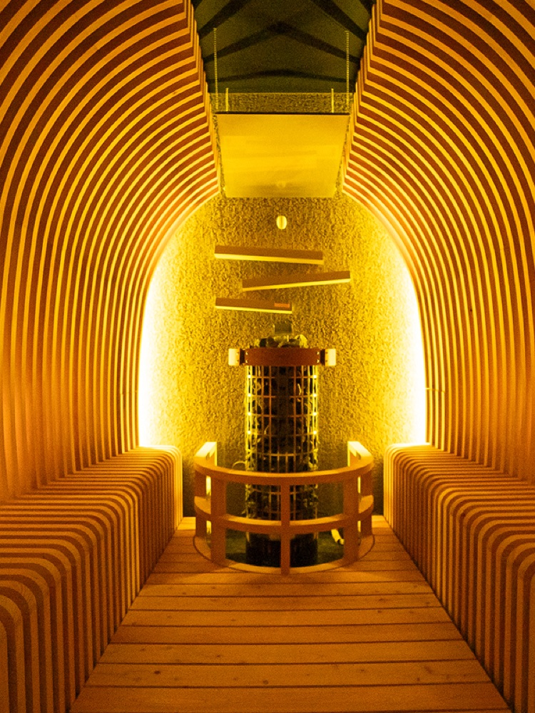
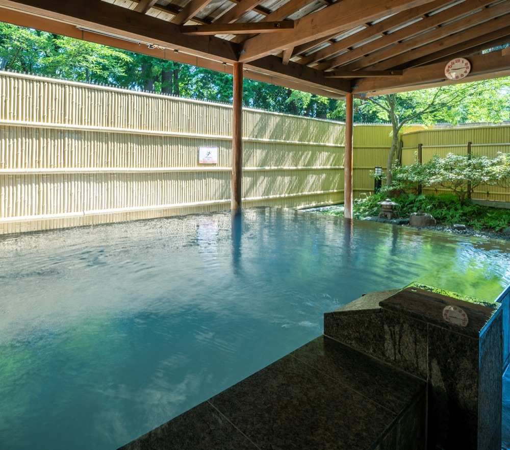

2026年10月12日（月・祝）
新宿ピカデリーで吹替を観たあと、昼からゆっくり入るサウナを3つ並べました。どこにするか選んでください。
コースA · 近くて気軽。昼から夕方までゆっくり
映画館から東久留米まで電車で30分。駅から無料シャトルバスで入館して、昼ごはんも館内で済ませます。3コースでいちばん移動が短く、いちばん気楽です。

移動は電車とシャトルバス。新宿三丁目から東久留米まで30分。経路は Yahoo!路線情報の2026-10-12の検索結果。
成立します。3コースでいちばん無理がありません。入館が13:25、退館が17:40で、サウナは約4時間。夜の終電を気にせず、19:25には錦糸町に着きます。もっと長く入りたい場合は、18:10発のシャトルで19:25〜19:30着に延ばせます。夜まで入るなら、スパジャポ発23:00のシャトルから東久留米23:25発が終電の目安で、錦糸町に00:24着です。
向いている人 映画のあとにサクッと入りたい日。移動より、サウナと食事の時間を取りたい時。
気をつけること シャトルバスは定員があり、満員だと次の便になります。公式サイトに混雑の注意書きがあり、岩盤浴エリアは席に空きがない状態と書かれています。
コースB · 遠いけれど温泉テーマパーク。1日がかり
新宿から越生まで電車で約1時間30分。着いてからは水着で入るサウナ3種と大浴場、岩盤浴、レストランまでそろった施設で、午後を丸ごと使います。


移動は電車とタクシー。新宿三丁目から越生まで1時間28分、越生から錦糸町まで約1時間36分。経路は Yahoo!路線情報の2026-10-12の検索結果。
成立しますが、足がタクシー頼みです。滞在は14:05〜18:00の約4時間、帰宅は19:53。19:00の夜間割は使えない時間帯です。タクシーが捕まらない場合に備えて、施設の電話番号を控えておきます。夜まで入るなら、越生駅22:33発が終電の目安で、錦糸町に00:24着です（水着スパは21:30まで）。
向いている人 1日使って、サウナも大浴場も岩盤浴も回りたい日。移動の長さを含めて遊びにしたい時。
気をつけること 往復3時間かかります。越生駅のタクシー乗り場は公式に記載がありません。サウナは水着着用の共用スパ内にあります。
コースC · いちばん遠い。モール併設で食事も同じ場所
イオンモール羽生に隣接したサウナ。新宿から1時間46分かかりますが、昼ごはんもサウナもモールの敷地で済みます。水着で入る男女共用のスパです。
移動は電車と徒歩。新宿三丁目からモールまで1時間46分、帰りは1時間46分。バスの時刻は公式で確認できていません。経路は Yahoo!路線情報の2026-10-12の検索結果。
成立しますが、いちばん疲れる日程です。往復で約3時間半。サウナは15:00〜19:10の約4時間、帰宅は21:03。夜に延ばすなら、最終入館が23:00なので入館側には余裕がありますが、終電は22:22のモール発が目安で、錦糸町に00:24着です。
向いている人 移動も含めて1日使い切りたい日。サウナと食事をひとつの場所で済ませたい時。
気をつけること 帰りの駅まで徒歩23分で、日没後は暗い道です。往復の電車が長く、乗換もあります。
ユウキは錦糸町駅を9:34に出ます。
映画は3コース共通で、新宿ピカデリー 10:25〜12:10（吹替、シアター1）。終映後に、選んだサウナへ向かいます。
各コースの帰宅時刻は、無理のない目安です。夜まで延ばす場合の終電は、各コースの「成立するか」に書いてあります。
| 営業・受付 | 料金 | 最寄り | |
|---|---|---|---|
| スパジャポ | 8:00〜深夜1:00、最終受付0:20 | 入浴950円。岩盤浴は別で950円。タオルセット300円 | 西武池袋線 東久留米駅。無料シャトルあり |
| おふろPark おごせ | 本館10:00〜22:00、最終入館21:30。水着スパ〜21:30。岩盤浴11:00〜19:00 | 入館1,980円（土日祝）。夜間割19:00〜880円。岩盤浴+550円 | JR八高線・東武越生線 越生駅から車で約10分 |
| YUBUNE SAUNA PARK | 10:00〜24:00、最終入館23:00。共用スパエリア〜23:00 | サウナパークプラン1,600円。水着400円 | 東武伊勢崎線 南羽生駅から徒歩23分（路線検索）。イオンモール羽生に隣接 |